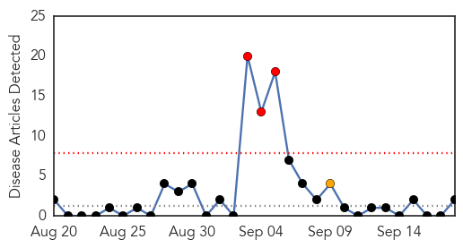
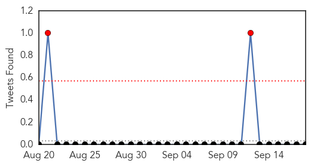
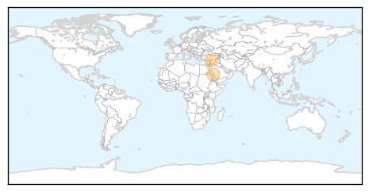
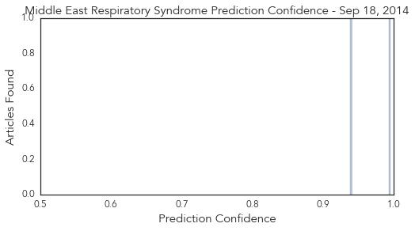

West Nile Virus
30-Day Web Trend
0 alerts, 0 warnings

30-Day Twitter Trend
1 alerts, 0 warnings

Article Locations

Article Confidences

Top Articles:
- 0.974
- Lafourche resident dies from West Nile virus
- 0.972
- Larose resident believed to have died from West Nile
- 0.960
- Human West Nile Virus case now confirmed in Volusia
- 0.877
- WAFB 9 News Baton Rouge, Louisiana News, Weather, Sports
- 0.859
- The deadly mosquitoes hitching a ride to Britain on the wheels of lorries coming through the Channel Tunnel
- 0.825
- West Nile virus blamed for Lee County death
- 0.801
- Mosquitoes like it hot
- 0.753
- Stamford man tests positive for West Nile
Top Tweets:
-
No tweets found for Sep 18, 2014
MERS
30-Day Web Trend
3 alerts, 1 warnings

30-Day Twitter Trend
3 alerts, 0 warnings

Article Locations
Article Confidences
Top Articles:
Top Tweets:
-
No tweets found for Sep 18, 2014